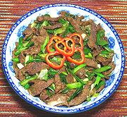

|
Beef & ScallionsChina - Sichuan / Hunan | ||||
| Serves: Effort: Sched: DoAhead: |
2 w/rice ** 30 min Most |
A quick flavorful stir fry, to be served with plenty of rice. Yes, that's a lot of scallions but that's what gives it a distinctly Chinese flavor. Many Chinese will not use regular onions which they call "foreign garlic". Foreign = "inferior" in Chinese. | |||
|
1 1 10 2 ---- 2 1/2 1 ---- |
# t oz T --- t c t --- |
Beef, lean (1) Sugar Scallions (2) Lard (3) -- Sauce Soy Sauce Rice Wine (2) Salt --------- |
Prep - (25 minutes)
|